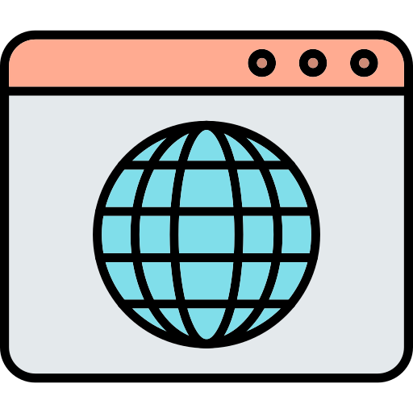
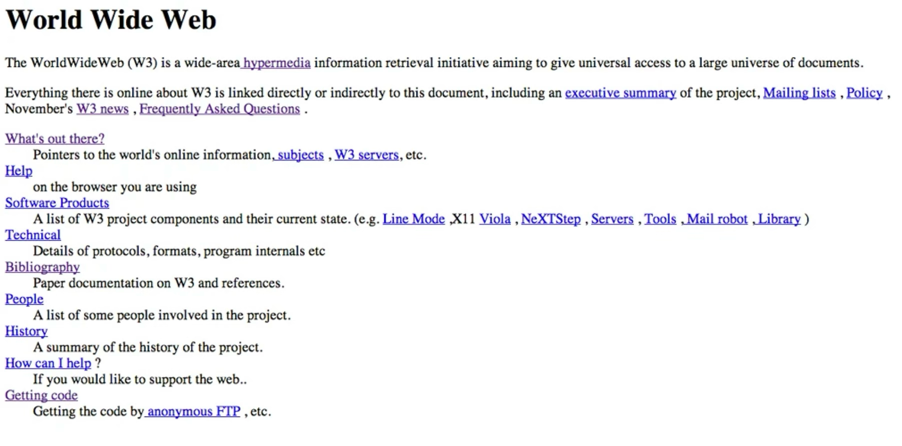
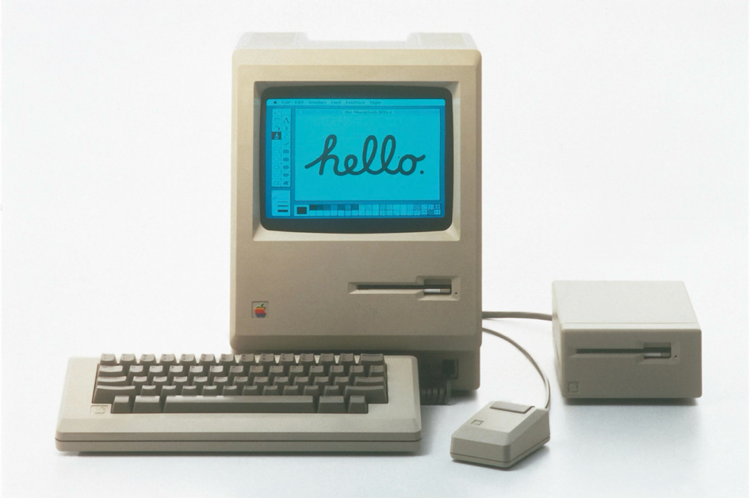
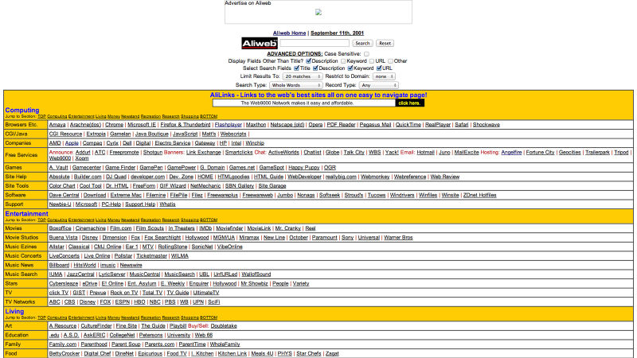
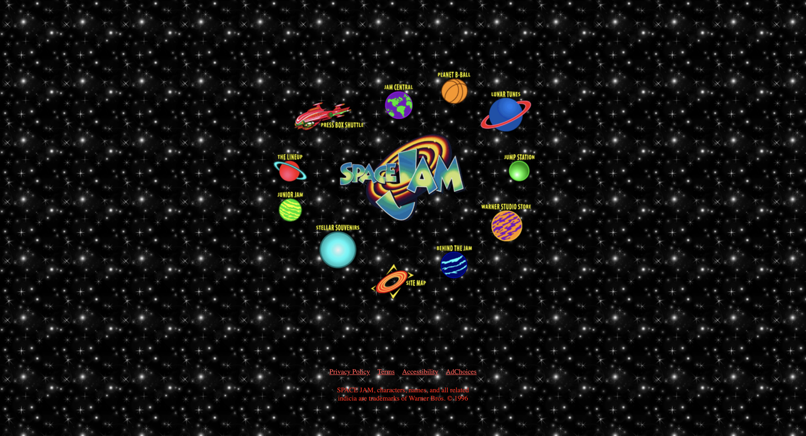
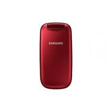
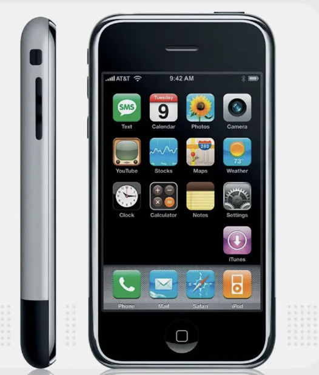

Автостопом по веб-платформе
Дисклеймер
Чего не будет
- кода
- практикоприменимости
- паттернов и вот этого всего
Что будет
- много ностальгии
- немного схем
- ..и еще немного ностальгии
Глава 1. Что такое
веб-платформа?
(или как зарождался веб)

Веб-платформа = Браузер + API + стандарты + тесты + комитеты
Но с чего всё началось?
Первый в мире комьютер ENIAC (1945 год)
| Параметр | ENIAC (1945) | iPhone 17 Pro (2025) |
|---|---|---|
| Операций в секунду |
≈5 000 сложений/сек ≈357 умножений/сек |
≥6 000 000 000 000 операций/сек |
| Память | 20 слов (10‑разрядные десятичные числа) | 6–8 ГБ ОЗУ, до 1 ТБ постоянной памяти |
| Потребление энергии | ≈174 кВт | ~10 Вт (пиковая нагрузка SoC) |
Интернет (World Wide Web)
Первый браузер в 1990 году создал Тим Бернерс-Ли.

Первый в мире сайт
Изначальная идея веба как гипертекстовой системы
для обмена знаниями

ПК —> Веб стал доступен каждому
Эра «Невинного» веба
- Статичные HTML-страницы
- Документы, ссылки, немного картинок
- Табличная вёрстка

Люди стали генерировать контент и самовыражаться
Сайт — как пиар компания фильма:
Space Jam(1996)

Сайт — как заработок:
The million dollars homepage (2005)

Интернет взрослеет
Самовыражение → сервис
- Почта в браузере (Gmail)
- Карты и навигация (Google Maps)
- Соцсети, мессенджеры, онлайн-документы
Веб перестаёт быть просто страницами и становится средой для жизни
️↓
Браузер уже не тянет «старым способом»
Появляется запрос на
- Быструю реакцию без полной перезагрузки
- Сложные интерфейсы (как в десктопных приложениях)
- Работу с большим количеством данных прямо в браузере
Глава 2.
Эволюция веб-платформы
(или как веб пытался догнать ожидания пользователей)
Фронтенд развивается скачкообразно
Скачок 1
Статичный HTML → Динамический веб
До (2004)
- Каждое действие — новая страница
- Обновить статус — рефреш
Gmail + AJAX
- Частичное обновление страницы
- Мгновенные ответы
AJAX решил скорость,
но создал новые проблемы
- "Спагетти"‑код повсюду (привет, jquery!)
- Состояние вручную
- Каждый разработчик делает свой велосипед
Нужна реиспользуемость
Скачок 2
Страницы → SPA и фреймворки
Было (MPA)
- Каждый экран — отдельный HTML
- Сервер рендерит всю страницу
- Ограниченная интерактивность
- Много кода
Стало (SPA)
- Angular/React/Vue/Svelte
- Клиент — UI-машина
- Сервер — только API
Но телефоны не стояли на месте
Кнопочные (2000–2007)

Сенсорные (2007+)

Мобильные телефоны развиваются
- Тяжёлый JS тормозит на слабых устройствах
- Touch UI вместо hover/click
- 3G/4G вместо оптоволокна
- Экраны от 320px до 4K
Скачок 3
Десктопный веб → Mobile-first
Десктоп‑first (2010)
- Фиксированная ширина 1024px
- Hover и курсор мыши
- Быстрый интернет (DSL)
- Мощные ПК
Mobile-first (2012+)
- Адаптивность 320px–4K
- Touch интерфейсы
- Производительность (lazy load)
- Сети 3G/4G
Mobile-first решили адаптивность,
но..
Боли нативных приложений
- App Store модерация (недели)
- Обновления только через стор
- Офлайн недоступен
- Push только через натив
Скачок 4
Веб → PWA
Обычный веб
- Только онлайн
- Не устанавливается
- Нет push
- Зависит от сети
PWA
- Offline-first
- Установка без стора
- Push нативные
- Кэш + Service Workers
Service Worker = прокси между сетью и кэшем
...но вылезли рендерные боли (опять)
- Тяжёлый JS на клиенте
- SEO страдает (SPA)
- TTFB медленный
- Сложно гибрид сервер/клиент
Скачок 5
Классический клиент/сервер → serverComponents
Классика
- Всё на клиенте (SPA)
- Или всё на сервере (MPA)
- Два кода
- SEO или скорость
RSC (React Server Components)
- Серверный рендер статичного
- Клиентский только интерактив
- Один код (async/await)
- SEO + скорость + PWA
Сервер рендерит → Streaming → Клиент "оживляет"
За 20 лет 5 скачков
2007: iPhone → мобильные боли (320px, touch, 3G)
├ 2007-2012: Mobile-first подход (адаптив, responsive)
└ 2010-2013: SPA бум (AngularJS 2010, React 2013) →
├ SPA + мобильные боли
├ → PWA (2015+)
└ → RSC (2023+)
150 Web API в браузере
Это полноценная платформа с доступом к железу, офлайну, пушам.
3D музей в браузере (React и Three.js)
https://museum.samokat.ru/Многопользовательская игра в браузере (webGL)
https://messenger.abeto.co/Глава 3. Кто делает веб?
(или зоопарк комитетов)
Кто разрабатывает веб
- W3C — World Wide Web Consortium
- WHATWG — Living Standard
- TC39 — JavaScript
- WICG — инкубация идей
- OpenJS Foundation
W3C, WHATWG, TC39, WICG
Браузерные вендоры
- Chrome (Google)
- Firefox (Mozilla)
- Safari (Apple)
- Edge (Microsoft)
Они — реальные implementers
W3C vs WHATWG
W3C
Снапшоты стандартов
Исторический подход
WHATWG
Living Standard
«Живой» стандарт
Расхождение философий: стабильность vs эволюция
Новые центры влияния
- React, Next.js
- Vercel, Netlify
- Крупные платформы
Сообщество, которое реагирует на изменения
и иногда конфликтует с вендорами
6. Interop & Web Platform Tests
Выравнивание браузеров
Проблема: историческая несовместимость
- Браузерные войны
- Разное поведение CSS
- Разные реализации API
- Боль разработчиков
или схема различий браузеров
Web Platform Tests
Общая база тестов для всех браузеров
или примеры тестов
https://wpt.fyi/
Результаты тестов (июнь 2021)
Chrome
510 тестов не проходят
из 41,761
Firefox
1,377 тестов не проходят
Safari
3,859 тестов не проходят
Пример: CSS Grid
https://wpt.fyi/results/css/css-grid
https://wpt.fyi/results/css/css-grid
Interop
- Совместная инициатива
- Выравнивание поведения
- Приоритизация областей:
CSS, forms, scrolling и т.д.
[ADD WPT EXAMPLES: compare two browsers]
Месседж
Мы уже стандартизируем не только текст спецификаций,
но и фактическое поведение
Веб становится более предсказуемым,
но цена — огромная координация
«Не ломайте веб»
Глава 4. Будущее
(никто точно не знает)
Итоги эволюции
HTML → Динамика → SPA → Мобильный → PWA → Гибриды
от 1990 до наших дней
A2UI — AI-Adaptative UI
- Интерфейсы, которые строятся и адаптируются
с участием ИИ-моделей - Браузер как фронтенд для ИИ-агентов
- Новый слой абстракции
или схема взаимодействия ИИ-агента с браузером
Вопросы для размышления
- Какие новые Web API понадобятся?
- Как снова поменяется роль браузера?
- Как изменится фронтенд?
Эпилог
Ключевые мысли
- Веб давно перестал быть «просто сайтами»
- Браузер — одна из самых сложных и
самых согласованных систем - Каждый новый слой добавляет сложность,
но остаётся в том же окне — вкладке браузера
Напоследок
типа «мне скучно»,
вспомните, с какой ахренительно сложной системой
вы работаете :)
Спасибо!
Вопросы?
[YOUR CONTACT]
[YOUR SOCIAL / GITHUB / TWITTER]
[LINKS TO RESOURCES]